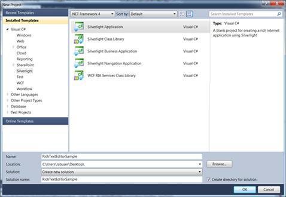
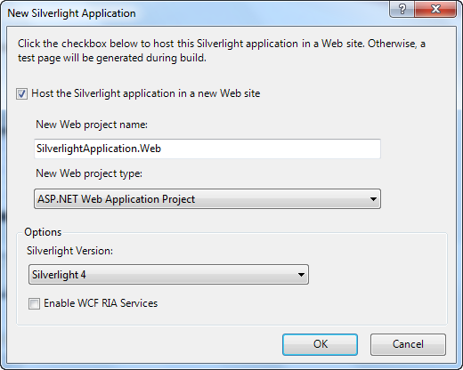

To create a new Silverlight application in Visual Studio 2008, follow the below steps:
1. Open Visual Studio 2008.
2. Click File tab and navigate to New > Project.

Figure 7: File tab
3. In the New Project dialog, select Silverlight Application, enter a name for the project in the Name field and click OK.

Figure 8: New Project dialog box - Silverlight Application
4. The New Silverlight Application dialog box appears.

Figure 9: New Silverlight Application Dialog Box
5. Select Host the Silverlight application in a new Web site check box and click OK. A new Silverlight application is now created.
Note: This step is optional. You can directly click OK to host the Silverlight application in a new web site.